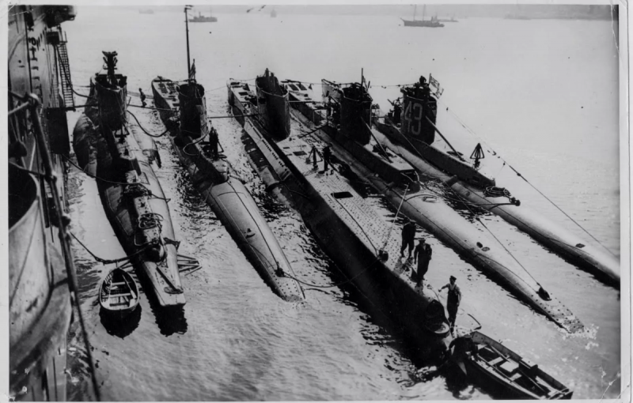
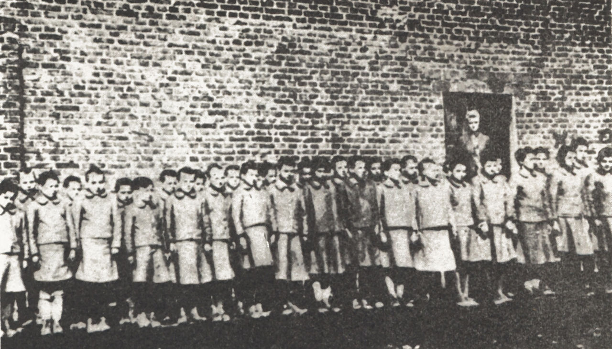
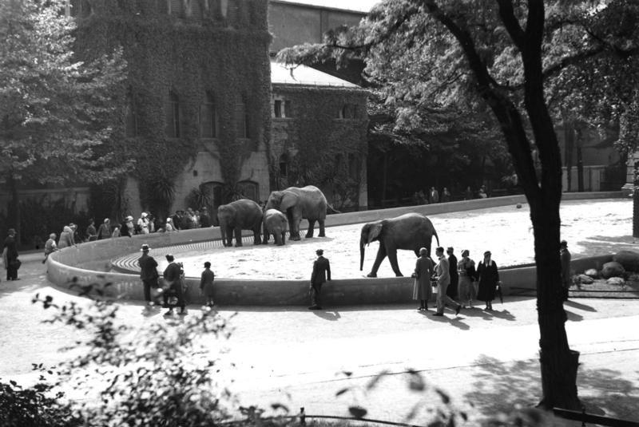
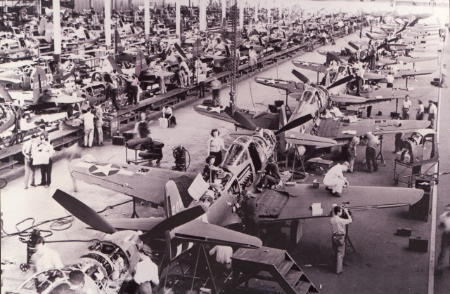
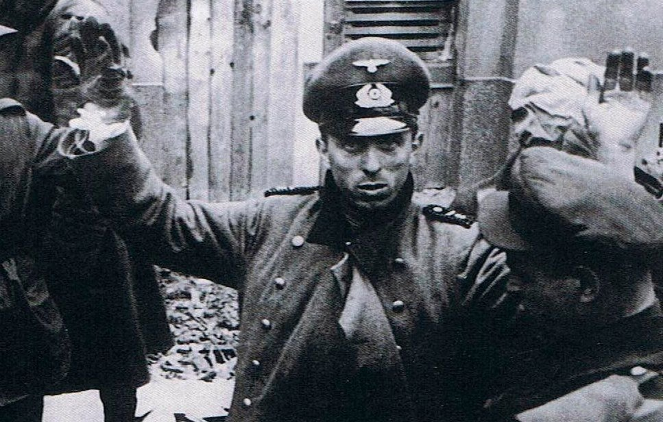
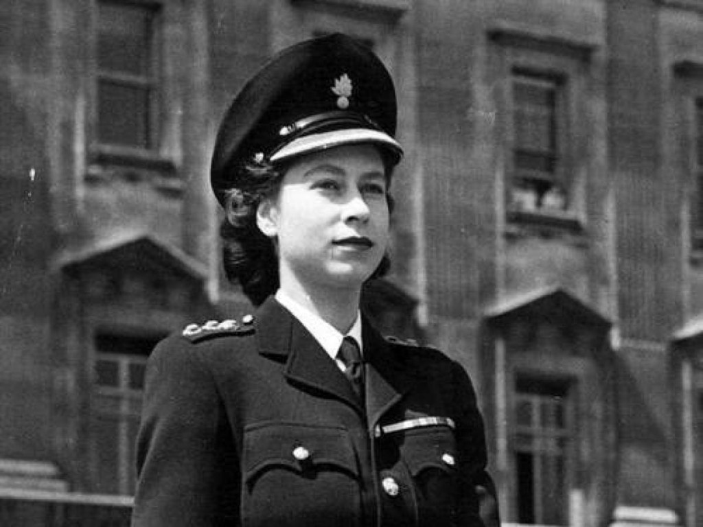
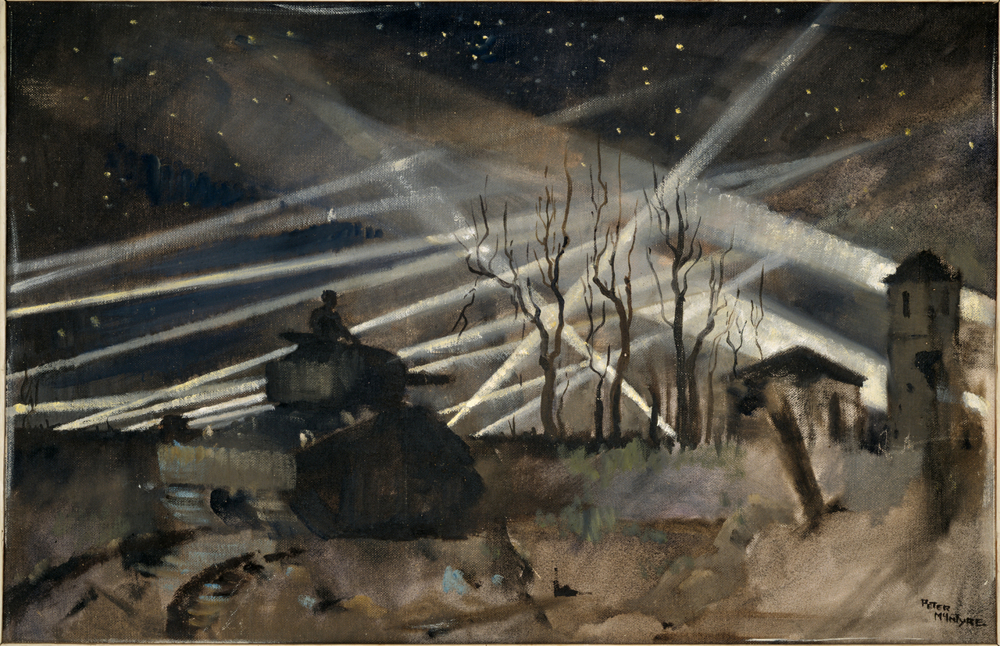
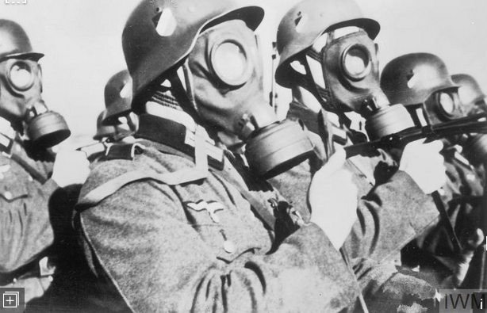
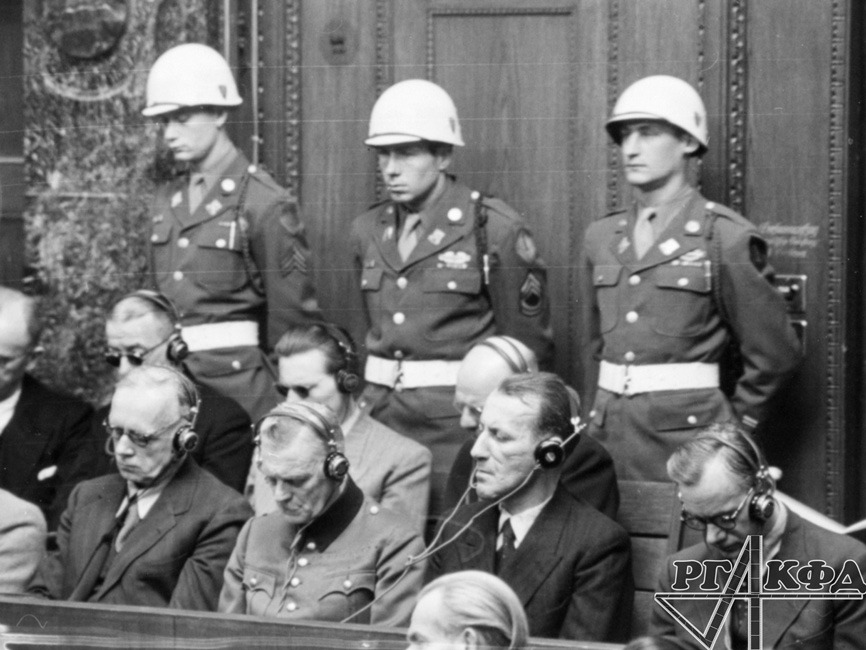
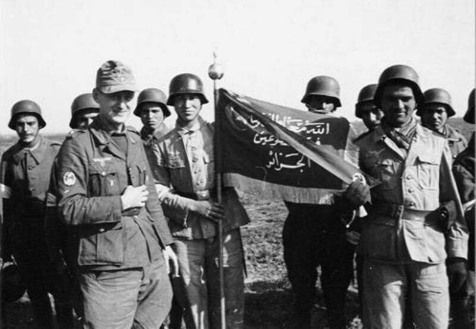

Факты о второй мировой войне
1.Недостатки немецкой подводной лодки
Одним из самых опасных видов оружия, применявшихся против союзников во Второй мировой войне, была немецкая подводная лодка. Тем не менее, мы никогда не узнаем о другом конце истории и о том, как немцы управляли всем на этих судах. По статистике, только один из пяти членов экипажа подводной лодки пережил войну. В то время как противолодочное оружие и большая сеть радаров делали жизнь экипажа подводной лодки довольно плохой, это было ничто по сравнению с угрозой, которую представлял собой туалет подводной лодки. Это была довольно сложная задача-использовать подводный туалет во время глубокого погружения, и для управления им требовался определенный опыт, иначе вся подводная лодка рисковала бы утонуть. Чтобы решить эту проблему, был введен новый туалет, в котором человек, использующий его, нуждался в помощи другого человека. Один из примечательных примеров туалетной катастрофы произошел, когда капитан, который не смог правильно использовать туалет, привел к выбросу хлорного газа. Это вынудило субмарину всплыть на поверхность, позволив союзникам выследить ее и заставить весь экипаж субмарины сдаться Верх
2.Похищение польских младенцев
Было похищено около 50 000 младенцев и детей, которые напоминали нацистам «истинных арийцев». Затем они были отданы в детские дома, где их могли усыновить немецкие пары, у которых не было собственных детей. Когда нацисты убили миллионы польских мужчин и женщин, многие дети стали сиротами. Чтобы решить этот вопрос, нацисты очень ловко похищали их, чтобы отправить в Германию. Эти дети были брошены на принудительный труд и использовались в качестве рабов, а тех, кто не был похож на немецких детей, в конечном итоге убивали или пытали. Многие из этих детей были обнаружены позже, когда союзники захватили контроль над Германией, и, несмотря на бесчисленные усилия, лишь небольшой процент из них смог вернуться обратно в свои дома. Верх
3.Гибель животных во время войны
Большое количество животных было убито не только во время Второй мировой войны, но и во время Первой мировой войны. Звери зоопарка во время войны столкнулись с худшим: их разбомбили на куски и даже забили от отчаяния, когда солдатам и людям было нечего есть. Те, кому удалось выжить в войне, позже умерли из-за ряда неблагоприятных условий, таких как неподходящая погода и нехватка продовольствия. Из 3 175 животных, помещенных в старый Берлинский зоопарк, только 91 выжил после того, как зоопарк был полностью разрушен. На самом деле, первая бомба, сброшенная на Берлин союзниками, сумела убить единственного слона, обитавшего в Берлинском зоопарке. Авиаудары были одним из самых больших факторов, способствующих этому, так как их целью было всегда разрушать города и поселки. Верх
4.Технологические достижения
Хотя Вторая Мировая война была одним из худших событий в мире, она также привела к большому количеству технологических достижений почти во всех сферах жизни, и эти достижения изменили жизнь людей по всему миру. Было открыто много новых способов консервирования продуктов питания и их импорта из одного места в другое, поскольку пакеты с соком, консервы, чипсы, батончики мюсли и обработанное мясо — все это примеры таких открытий. Люди смогли разработать более совершенные с научной точки зрения методы сохранения своей пищи свежей в течение более длительного времени. Многие кухонные приборы также были изобретены заново, такие как микроволновая печь, которую теперь можно найти почти в каждом доме. Другие предметы роскоши, такие как современные воздушные путешествия, также могут быть отнесены к побочному продукту открытий, сделанных во время войны.
Верх
5.Почему Германия проиграла войну
В какой-то момент во время войны казалось, что нацистов уже не остановить, однако расизм был главной причиной, приведшей к их падению. Одним из первых неудобств, с которыми пришлось столкнуться немцам из-за их ненависти к евреям, было то, что многие компетентные люди покинули Германию. Среди них было много гениальных личностей, которые впоследствии продолжат работать с союзниками. Другая важная причина заключалась в том, что немцы заставили многих чешских военнопленных работать на них, и эти люди мстили им, сознательно манипулируя механизмами машин и винтовочными прицелами. Многие бельгийцы и другие рабы также сыграли свою роль в разрушении систем наведения для важного оборудования. В конечном итоге все вышеперечисленные факторы в сочетании с плохой стратегией ближе к концу войны и плохими решениями привели к поражению нацистской Германии.
Верх
6.Роль королевы Елизаветы 2
Многие люди будут удивлены, узнав, что старшая дочь короля Великобритании Георга 4 служила водителем и механиком во время Второй мировой войны, а после войны она стала королевой Елизаветой 2. Совершенно удивительно, что королева Елизавета была единственным членом королевской семьи, который когда-либо служил в армии во время Второй мировой войны. В настоящее время она также является единственным живым главой любого государства, участвовавшим во Второй мировой войне. Она очень хотела участвовать в военных действиях и внести свой вклад в развитие своей страны несмотря на то, что отец не разрешал ей этого делать. Она вступила в женскую вспомогательную территориальную службу, после чего получила образование механика и водителя грузовика в Лондоне. В то время ей было всего 18 лет.
Верх
7.Искусственный лунный свет
Англичане были настолько умны, что сумели изобрести искусственный лунный свет, который помогал им вести ночной бой. Для выполнения этой работы англичане использовали огонь разрывных артиллерийских снарядов и прожекторов, которые создавали плотные облака дыма над целью, после чего в качестве последующей цели они использовали трассирующие боеприпасы различных цветов. Это создало яркие пятна света на Земле, которые помогли войскам найти свой путь. Разноцветные трассирующие снаряды использовались, чтобы точно определить, где бронетехника, пехота и другие группы должны будут атаковать. Эта техника помогала англичанам на протяжении всей войны и может считаться одной из причин их успеха.
Верх
8.Применение химического оружия
Хотя химическое оружие широко применялось на протяжении всей Первой мировой войны, к моменту начала Второй мировой войны его применение считалось незаконным. За все время конфликта был зафиксирован только один инцидент, который ознаменовал применение химического оружия во время этой войны, что удивительно, это было сделано союзниками. Американские военные импортировали баллоны с ипритом в итальянский порт Бари для химической войны против Германии, но прежде, чем это было сделано, корабли были разбомблены немецкими Люфтваффе, уничтожив склады химических грузов. Так, в результате было уничтожено в общей сложности 27 грузовых судов и убито более 2000 военнослужащих и гражданских лиц. В течение многих лет и американцы, и англичане продолжали отрицать тот факт, что на борту этих кораблей находилось какое-либо химическое оружие, однако правду нельзя было скрыть
Верх
9.Множество нацистов ушли безнаказанными
Почти все знают о зверствах, совершенных нацистами во время Второй мировой войны. Мы видели некоторые из самых бесчеловечных методов лечения, которые применялись к людям, помещенным в концентрационные лагеря. Это заставило бы многих поверить, что нацисты будут наказаны за свои преступления после победы союзников, однако на самом деле этого никогда не происходило. Кроме некоторых печально известных нацистских офицеров, более 400 000 немецких солдат смогли уйти без каких-либо последствий. Внезапный приток военнопленных был новым явлением для Соединенных Штатов, и было решено поместить их в лагеря для военнопленных, где они были хорошо накормлены и все их потребности были удовлетворены. Большинство этих заключенных вернулись домой после войны в 1946 году, где они все еще поддерживали связь со своими американскими друзьями, а затем переехали в США, где им удалось получить гражданство.
Верх
10.Вербовка иностранцев СС
Ваффен-СС был вооруженным крылом немецкой нацистской партии. Он служил вместе с регулярной германской армией на протяжении всей Второй Мировой Войны и печально известен тем, что выполнял прямые приказы Адольфа Гитлера. У нацистов была расовая политика, которая означала, что только те, кто соответствовал требованиям быть арийцем, могли присоединиться. Это требование позже оказалось довольно ироничным, поскольку эсэсовцы в конечном итоге набирали добровольцев со всего мира. Первоначально добровольцы отбирались только из конкретных европейских стран, однако позже их привезли из разных этнических групп, включая индонезийских, украинских и даже индийских солдат.
Верх